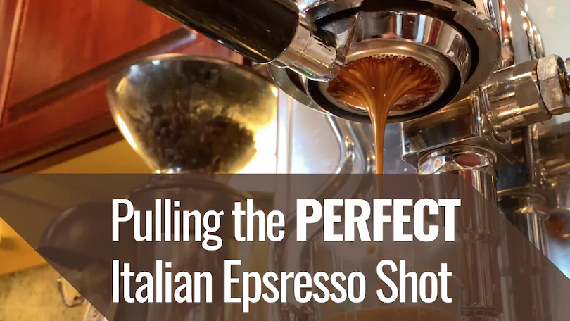

B281 · Pulling The PERFECT Espresso Shot ☕️
Hi {first_name},
This week I'm excited to switch-up our focus from what's been 12 consistent weeks of Bags, Bells, and Bodyweight content (whew hew!) to share and breakdown the steps to making a perfect espresso shot.
I had a LOT of fun yesterday pulling shot, after shot, after shot LOL, and making a new coffee focused YouTube video - it's all about those Tiger Stripes baby! ? ;)
 Just like with movement, there is intention, technique, progression, and more all built into the process.
Click here to watch the full Youtube Video.
Here's the equipment and coffee used in the video:
If you are in the market for a quality espresso machine that is more economical (as far as good machines go), I honestly loved the Rancilio Silvia for years and have recommended it more than any other machine to friends and family members.
The only reason I switched machines to the Rocket is because of the sheer volume of espressos I was pulling on a weekly basis with a house full of room mates and wanted a more commercial machine.
For single family use, you'll love the Rancilio Silvia. Here is a link to that in case you are interested: https://www.seattlecoffeegear.com/rancilio-silvia-espresso-machine It's simple, durable, and pulls great shots.
I hope you enjoy your weekend and put a little extra love, intention and care into your morning beverage ritual : )
Mike
P.S. If you enjoyed this week's coffee video, please share this email and subscribe to my Youtube channel to support. Thank you!
|